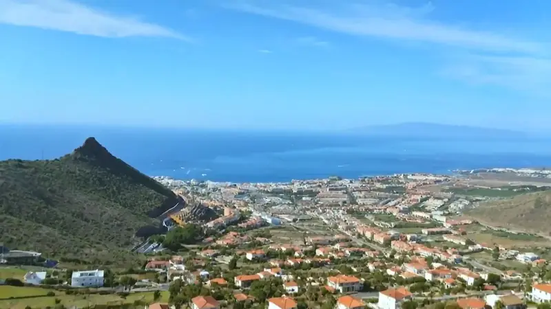
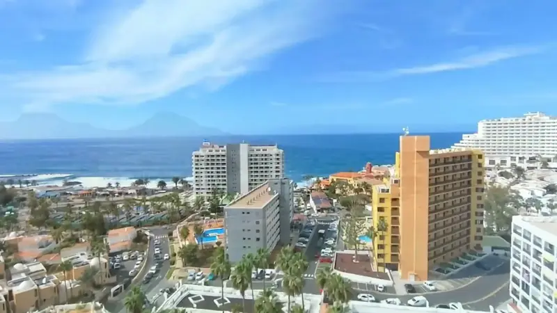
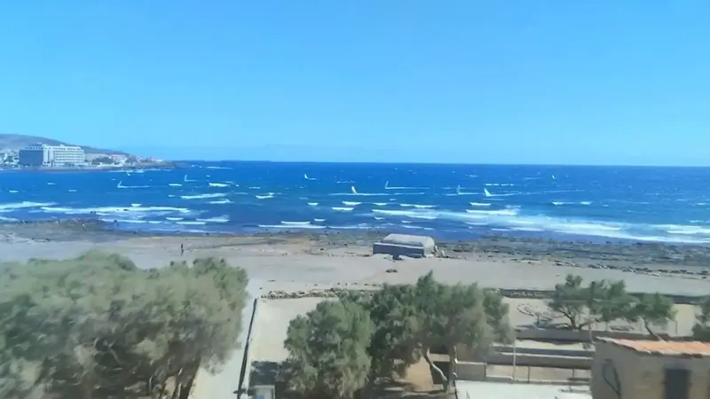
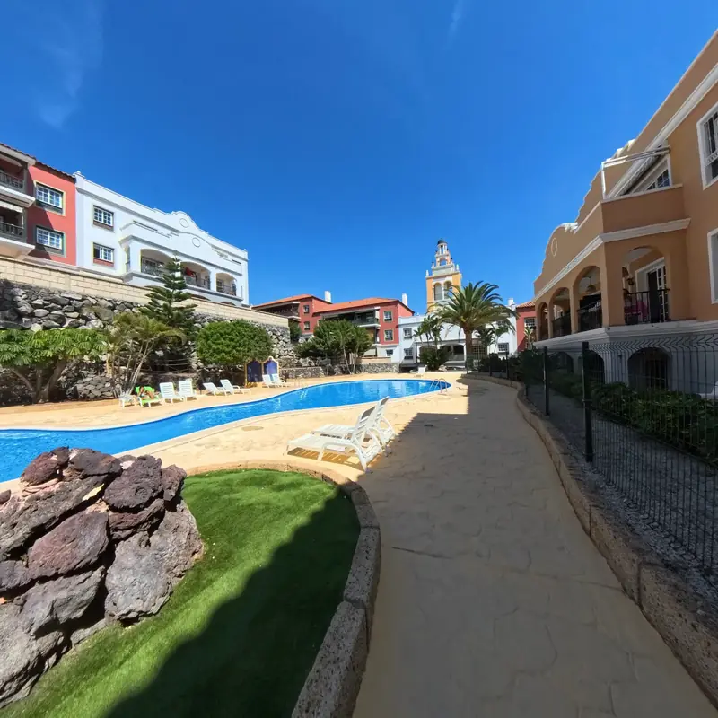
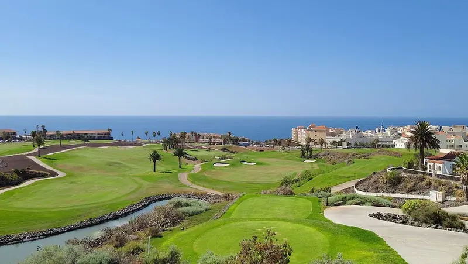
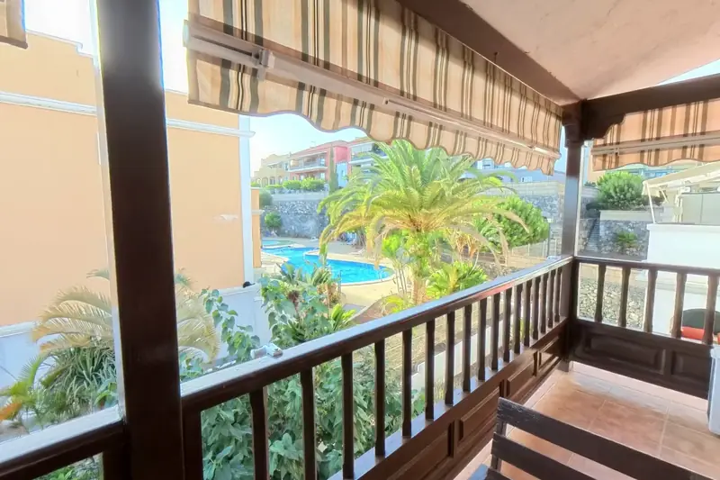

Carta de la asesora
Una quincena de datos sólidos en el sur
Estimado lector: los datos de idealista de octubre de 2026 muestran un sur de Tenerife con perfiles muy distintos. Costa Adeje marca 5.257 €/m², Playa de las Américas 5.959 €/m² y Abama 7.127 €/m². Al mismo tiempo, zonas como San Isidro (+11,4 % anual) o Valle San Lorenzo (+11 %) ganan atención. A nivel nacional, idealista habla de un nuevo máximo en vivienda usada.
Si usted es propietario, el mensaje es que cada zona tiene su ritmo y su comprador. El precio de salida debe apoyarse en comparables de su calle y no en la media del municipio. En nuestra experiencia, una vivienda bien preparada y bien posicionada atrae visitas cualificadas desde la primera semana. Por eso recomendamos una valoración profesional antes de fijar cifra.
Si busca comprar o invertir, la clave es elegir bien el perfil. Las zonas consolidadas ofrecen liquidez y servicios; las de entrada, como Granadilla (2.129 €/m²) o Tijoco (2.895 €/m²), permiten una inversión inicial más contenida. Vemos además que la demanda extranjera supera el 16 % de las compras en España, según idealista, lo que invita a decidir con método y sin prisas innecesarias.
En Villa's Properties le acompañamos en ambos lados. Si quiere conocer el valor real de su vivienda, le hacemos una valoración gratuita y sin compromiso. Si desea ver propiedades o plantear una inversión, le preparamos una selección a medida y le explicamos cada zona con datos. Basta con que nos escriba o nos llame y concertamos una conversación tranquila.
«En el sur de Tenerife cada zona es un mercado distinto: decidir con datos locales marca la diferencia.»
Carta y recomendaciones de nuestra asesora, municipio a municipio con mapas y gráficos, mapa de oportunidades para el inversor y conclusiones.
La quincena en tres cifras
Fuente: idealista, octubre 2026.
El dato de la quincena
variación anual del €/m² en San Isidro (Granadilla), octubre 2026
Si vendes
Si su vivienda está en una zona que gana atención, conviene aprovechar esa visibilidad con una valoración actualizada y una presentación cuidada.
Si compras o inviertes
Con 2.490 €/m², San Isidro ofrece un precio de entrada contenido dentro del sur. Recomendamos estudiar cada vivienda con comparables reales de la zona.
Un sur con mercados para cada perfil
Según idealista (octubre 2026), Arona lidera entre los grandes municipios con 4.082 €/m² de media, Adeje alcanza 4.759 €/m² y Guía de Isora 4.563 €/m², con un avance mensual del 1,5 %. Granadilla (3.005 €/m²) y San Miguel de Abona (3.153 €/m²) ofrecen precios de entrada más accesibles. Esa variedad permite a cada comprador y a cada vendedor encontrar su lugar.
| Municipio | Precio medio | Subida anual |
|---|---|---|
| Adeje | 4.759 €/m² | +1 % |
| Guía de Isora | 4.563 €/m² | +2,3 % |
| Arona | 4.082 €/m² | +1,3 % |
| Santiago del Teide | 3.673 €/m² | — |
| San Miguel de Abona | 3.153 €/m² | — |
| Granadilla de Abona | 3.005 €/m² | +2,5 % |
Precio medio de oferta por m², idealista, octubre 2026. «—»: sin subida que destacar este mes.
Municipio a municipio
Adeje: del prime de Costa Adeje al casco

Municipio de referencia del sur, con 4.759 €/m² de media. Costa Adeje llega a 5.257 €/m² y Playa Paraíso a 4.652 €/m²; el Casco Urbano (3.520 €/m²) y Tijoco (2.895 €/m²) ofrecen una entrada más accesible.
Si vendes: El Casco Urbano (+7,8 % anual) y Tijoco (+7,2 %) muestran buen comportamiento. Si vende allí, apoye el precio en comparables recientes de su misma zona.
Si compras o inviertes: Costa Adeje aporta ubicación consolidada; Casco Urbano y Tijoco permiten una inversión inicial menor. Elija según su objetivo y su horizonte de tiempo.
Antes de ver viviendas, defina zona y presupuesto. Si vende, pida una valoración con comparables de su calle: en Adeje la diferencia entre zonas es muy grande.
Cuánto vale una vivienda en Adeje · Comprar casa en Adeje
Arona: gran variedad de zonas y precios

Municipio con 4.082 €/m² de media y un abanico amplio: Playa de las Américas (5.959 €/m²) y Los Cristianos (4.810 €/m²) por un lado, Valle San Lorenzo (2.628 €/m²) y El Fraile (2.584 €/m²) por otro.
Si vendes: Valle San Lorenzo avanza un 11 % anual y Costa del Silencio-Las Galletas un 4,5 %. Quien vende en estas zonas encuentra un comprador atento al precio.
Si compras o inviertes: Los Cristianos y Las Américas ofrecen servicios y demanda consolidada; Valle San Lorenzo y Las Rosas (2.995 €/m²) permiten entrar con menos capital.
Si compra, visite la zona en distintos días y horas antes de decidir. Si vende, destaque lo que su barrio ofrece: servicios, accesos y cercanía al mar.
Cuánto vale una vivienda en Arona · Comprar casa en Arona
Granadilla: precio de entrada y zonas al alza

Con 3.005 €/m² de media, combina el atractivo costero de El Médano (3.889 €/m²) y Los Abrigos (3.386 €/m²) con un interior más asequible: San Isidro (2.490 €/m²) y Granadilla (2.129 €/m²).
Si vendes: San Isidro (+11,4 % anual) y Granadilla (+8,8 %) ganan atención. Es un buen momento para dar a conocer su vivienda con buenas fotos y datos claros.
Si compras o inviertes: Es uno de los precios de entrada más contenidos del sur, con zonas de perfil muy distinto. Conviene comparar costa e interior antes de decidir.
Si busca precio de entrada, estudie San Isidro y Granadilla. Si prefiere costa, compare El Médano y Los Abrigos con visitas en temporada alta y baja.
Cuánto vale una vivienda en Granadilla de Abona · Comprar casa en Granadilla de Abona
San Miguel de Abona: golf y zona residencial

Municipio residencial con 3.153 €/m² de media. Golf del Sur-Amarilla Golf (3.640 €/m²) aporta el perfil más cuidado; Guargacho, Las Chafiras y el casco ofrecen precios de entrada más cercanos a los 2.000-2.800 €/m².
Si vendes: Golf del Sur-Amarilla Golf avanza un 5 % anual. Si vende allí, destaque entorno, comunidad y servicios: son sus argumentos más sólidos.
Si compras o inviertes: Un municipio de perfil residencial y precios contenidos, cercano a los grandes núcleos turísticos. Recomendamos comparar varias zonas antes de decidir.
Compare siempre Golf del Sur con Las Chafiras y Guargacho: el perfil de vivienda y el presupuesto cambian mucho. Pídanos una selección a medida.
Cuánto vale una vivienda en San Miguel de Abona · Comprar casa en San Miguel de Abona
Guía de Isora: del lujo de Abama a Playa San Juan
Con 4.563 €/m² de media y un avance mensual del 1,5 %, reúne Abama (7.127 €/m²), el techo del sur, y zonas como Playa San Juan (4.120 €/m²) y el casco de Guía de Isora (3.059 €/m²).
Si vendes: Playa San Juan avanza un 8,3 % anual y el casco un 5,6 %. Propietarios de estas zonas cuentan con argumentos reales para una valoración ambiciosa y razonada.
Si compras o inviertes: Abama es un segmento exclusivo; Playa San Juan y el casco permiten acceder a Guía de Isora con inversiones más moderadas. El perfil de cada zona es muy distinto.
En Abama la comparación debe hacerse con propiedades equivalentes, no con la media del municipio. Si vende, pida una valoración específica de su urbanización.
Cuánto vale una vivienda en Guía de Isora · Comprar casa en Guía de Isora
Santiago del Teide: vistas y entorno singular
Municipio de entorno singular, con 3.673 €/m² de media. Acantilados de Los Gigantes alcanza 4.468 €/m² y Puerto de Santiago 3.618 €/m², con un perfil residencial y de segunda residencia muy marcado.
Si vendes: El valor aquí lo marcan las vistas, la orientación y la cercanía al mar. Una buena presentación de esos atributos es su mejor carta al salir al mercado.
Si compras o inviertes: Los Gigantes y Puerto de Santiago ofrecen un paisaje difícil de replicar en el sur. Recomendamos visitar con calma y comparar por orientación y estado.
Si compra, priorice vistas, orientación y estado de la comunidad. Si vende, invierta en buenas fotos con luz natural: aquí la imagen vende el entorno.
Cuánto vale una vivienda en Santiago del Teide · Comprar casa en Santiago del Teide
Zonas de entrada con avance anual destacado

Para el inversor que busca un precio de entrada contenido, idealista (octubre 2026) señala Valle San Lorenzo (2.628 €/m², +11 % anual), San Isidro (2.490 €/m², +11,4 %), Granadilla (2.129 €/m², +8,8 %) y Tijoco (2.895 €/m², +7,2 %). Recomendamos revisar cada vivienda con comparables y estado real, porque dentro de una misma zona hay diferencias notables.
- San Miguel de Abona (San Miguel de Abona): 2.031 €/m², +2,2 % en un año
- Granadilla (Granadilla de Abona): 2.129 €/m², +8,8 % en un año
- San Isidro (Granadilla de Abona): 2.490 €/m², +11,4 % en un año
- Cabo Blanco (Arona): 2.573 €/m², +6,4 % en un año
- El Fraile (Arona): 2.584 €/m², +2,9 % en un año
- Valle San Lorenzo (Arona): 2.628 €/m², +11 % en un año
Zonas por debajo de 2.700 €/m² con subida anual. Fuente: idealista, octubre 2026.
Lo que se mueve
La vivienda usada marca nuevo máximo nacional en octubre
Según idealista, el precio sube un 11,2 % anual. Para quien vende, es un buen contexto para valorar con criterio; para quien compra, conviene comparar zona a zona.
Los extranjeros superan el 16 % de las compras en verano
La demanda internacional sigue activa. Quien vende puede dar visibilidad a su vivienda también fuera de España; quien compra debe tener en cuenta esa competencia.
Nuevos inversores europeos buscan activos de calidad en España
Hay apetito por activos bien ubicados. Para propietarios, un inmueble cuidado destaca; para inversores, conviene decidir con método y tener la financiación preparada.
El crédito a las familias marca máximos de una década
Indica que la financiación está activa. Quien compra debería tener su aprobación hipotecaria antes de visitar; quien vende gana en agilidad con compradores ya financiados.
El euríbor se mueve a diario: atención a la hipoteca
Para quien compra con hipoteca, merece la pena simular cuota con varios escenarios. Para quien vende, entender la financiación del comprador ayuda a negociar mejor.
El decreto de vivienda queda convalidado en la Diputación Permanente
Para propietarios e inversores es relevante conocer el marco normativo. Antes de decidir, consulte con su asesor fiscal o con nosotros cómo le afecta en su caso.
Recomendaciones de la asesora
Recomendaciones para decidir con criterio
Estas son las recomendaciones que damos hoy a nuestros clientes, según los datos de idealista de octubre 2026 y nuestra experiencia en el sur de Tenerife.
Si vendes
Pida una valoración basada en ventas y anuncios de su propia calle o urbanización. La media del municipio engaña: en Adeje hay zonas de 2.895 a 5.257 €/m². Nosotros se la hacemos gratis.
Pequeñas reparaciones, orden y buena luz marcan la primera impresión. Recomendamos fotos profesionales antes de publicar: las primeras semanas son las que más visitas generan.
Nota simple, escritura, certificado energético y estado de la comunidad agilizan la operación. Un comprador que lo ve todo claro negocia con más confianza y cierra antes.
Según idealista, los extranjeros superan el 16 % de las compras en verano. Presentar la vivienda con información clara y varios idiomas amplía el público interesado.
Si compras o inviertes
Zona consolidada, como Costa Adeje o Los Cristianos, o zona de entrada, como San Isidro o Valle San Lorenzo: son decisiones distintas. Defina su objetivo antes de ver viviendas.
Dentro de un mismo municipio las diferencias son grandes. Pídanos comparables de la zona concreta antes de ofertar y contrastaremos el precio con datos reales.
Con el crédito en máximos de una década, según idealista, los compradores con aprobación previa ganan agilidad. Simule la cuota con varios escenarios de euríbor antes de visitar.
Antes de firmar, compruebe cargas, comunidad y licencias. En fiscalidad y financiación, consulte con su asesor fiscal o con nosotros: cada caso es distinto.

Conclusiones
Lo que nos llevamos de esta quincena
- El sur es un mercado de microzonasLa diferencia entre Granadilla (2.129 €/m²) y Abama (7.127 €/m²) demuestra que decidir con la media del municipio es un error. Compare siempre por zona.
- Hay zonas de entrada con avance sostenidoSan Isidro (+11,4 %), Valle San Lorenzo (+11 %) y Granadilla (+8,8 %) crecen en tasa anual, según idealista. Son opciones a estudiar con calma.
- La costa consolidada mantiene su atractivoPlaya de las Américas (5.959 €/m²) y Costa Adeje (5.257 €/m²) siguen siendo referencia del sur. Su liquidez y servicios son su mejor argumento.
- El contexto nacional acompañaIdealista sitúa la vivienda usada en un nuevo máximo en octubre (+11,2 % anual) y la demanda extranjera supera el 16 % en verano. Es buen momento para valorar.
- Guía de Isora gana tracción mensualEl municipio avanza un 1,5 % en el mes hasta 4.563 €/m², con Playa San Juan a +8,3 % anual. Merece atención tanto de vendedores como de compradores.
- La evolución mensual de Playa San Juan, Valle San Lorenzo y San Isidro en los próximos datos de idealista.
- Cómo se mueve el euríbor y qué cuota resulta para las hipotecas que simulamos con clientes.
- Novedades del decreto de vivienda y su aplicación práctica para propietarios e inversores.
Gracias por leernos. Si es propietario, le ofrecemos una valoración gratuita y sin compromiso; si quiere comprar o invertir, preparamos una selección a medida y le explicamos cada zona con datos. Estamos a su disposición para hablar con calma, sin presión y con la transparencia que nos caracteriza. Valeria Villa, CEO de Villa's Properties.
Déjanos tu email o tu WhatsApp al descargar el PDF y te llegará el siguiente, con los datos nuevos de tu zona.
Fuentes: idealista (octubre 2026, precios por municipio y zona; y las noticias citadas), INE, Portal Estadístico del Notariado, El Mundo y Expansión. Las noticias están resumidas por Villa’s Properties y enlazan al original. Este análisis es orientativo y no sustituye una valoración profesional de cada vivienda.